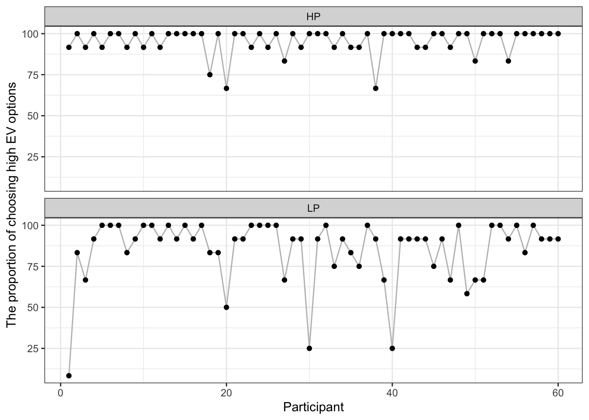
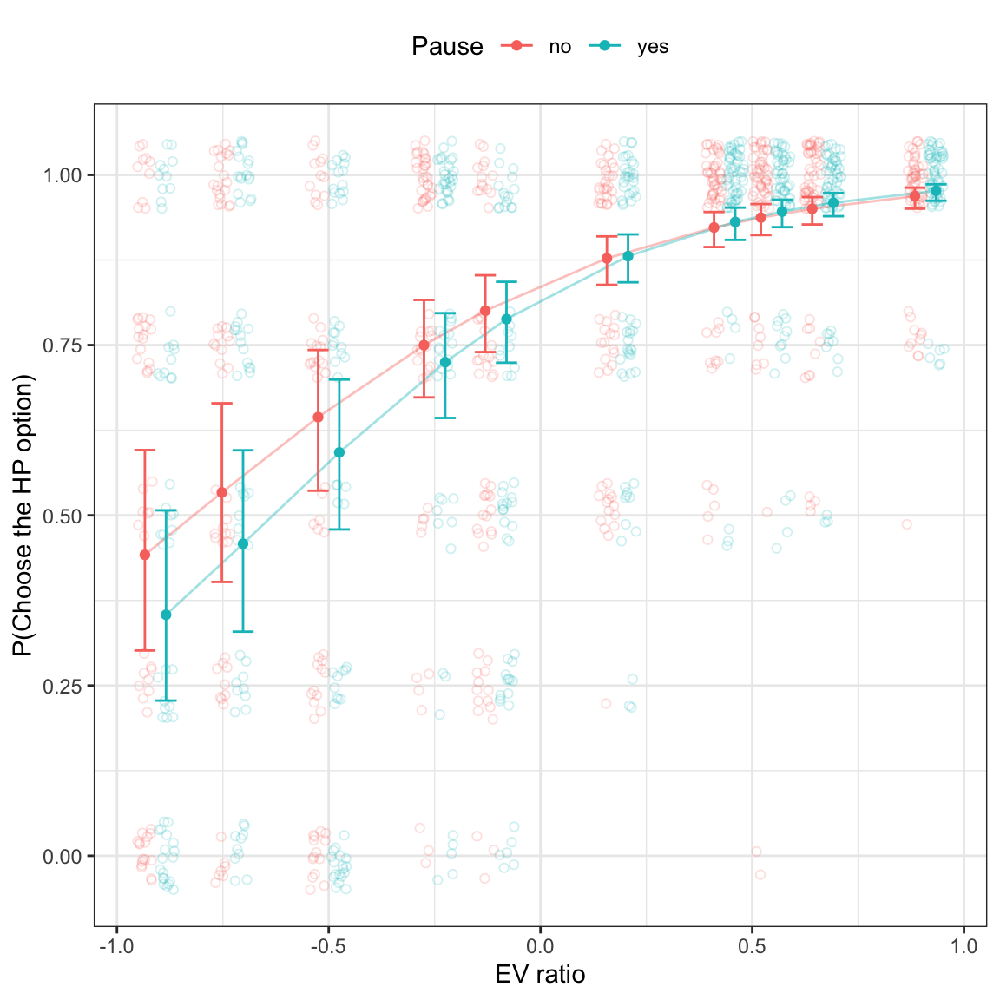
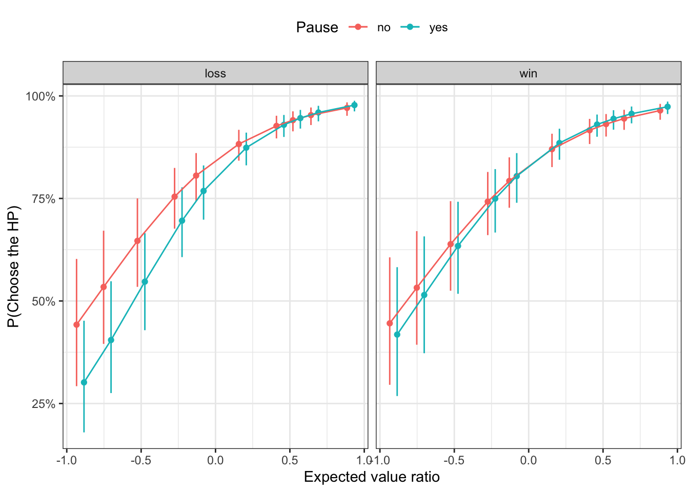
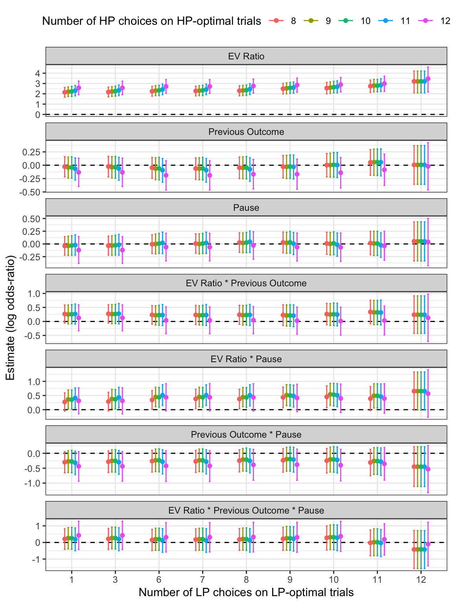

In this set of analyses, I focus on the choices participants made in the Vancouver Gambling task.
Load libraries and data
Code
# load librarieslibrary(MASS)library(Rmisc)library(afex)library(tidyverse)library(patchwork)library(extraDistr)library(loo)library(bridgesampling)library(brms)library(cmdstanr)library(bayesplot)library(bayestestR)library(tidybayes)library(sjPlot)# parallelize the chains using all the coresoptions(mc.cores = parallel::detectCores())# set the theme for all ggplot2 figurestheme_set(theme_bw() +theme(legend.position ="top",legend.direction ="horizontal"))# create a folder for saving brms fitsif(!dir.exists("brms-fits")){dir.create("brms-fits")}# load the cleaned datadf_main <-read_csv("../../../data/processed/df_main_exp2.csv")
Choices
Catch trials
In this experiment, I included two types of catch trials, either the high-probability option or the low-probability option has a much higher expected value than the other. Here I plot how often participants chose the higher EV option for these two types of catch trials (Figure 1).
Code
# catch trialsdf_catch_choices <- df_main %>%filter(trial_type =="catch") %>%group_by(subject_ID, high_EV_option) %>%summarize(# the total number of trials, should be 12 for all participantsn_total =n(),# the number of trials on which people chose the high EV optionn_high_EV =sum(choose_high_EV =="yes"),# the proportion of choosing the high EV optionprop_high_EV = n_high_EV / n_total*100 ) %>%ungroup()# plot the choices on the catch trialsggplot(df_catch_choices, aes(subject_ID, prop_high_EV)) +geom_line(aes(group =1), color ="gray") +geom_point() +labs(x ="Participant", y ="The proportion of choosing high EV options") +facet_wrap(~high_EV_option, ncol =1)# compute some descriptivescatch_choices_descriptive <- df_catch_choices %>%group_by(high_EV_option) %>%summarize(mean =mean(n_high_EV),sd =sd(n_high_EV),min =min(n_high_EV),max =max(n_high_EV) )

Figure 1: The proportion of choosing the high EV option on the catch trials when the high-probability option (top) or the low-probability option (bottom) has a higher EV.
When the high-prob option has a higher EV, participants overall chose the high-prob option frequently. There are three participants for whom the proportion of choosing the high-prob option is <= 75%. When the low-prob option has a higher EV, there is much more variation in how often people chose the low-prob option. The majority of the participants still chose the low-prob option more than half of the time though. For only 4 participants, the proportion of choosing the low-prob option is <= 50%.
Experimental trials
EV ratios
In this analysis, I use the EV ratio between two options, the outcome of game 1 (loss = 0.5, win = -0.5) and whether there was a pause or not (yes = 0.5, no = -0.5) and their interactions as predictors to predict whether participants chose the HP option or not on each trial. I use the maximum random structure by including both random intercept and all random slopes per participant.
Code
# find the participants that need to be excludedhigh_prob_cutoff <-9low_prob_cutoff <-1subject_exclude1 <- df_catch_choices %>%filter( high_EV_option =="HP", n_high_EV < high_prob_cutoff ) %>% .$subject_IDsubject_exclude2 <- df_catch_choices %>%filter( high_EV_option =="LP", n_high_EV < low_prob_cutoff ) %>% .$subject_IDdf_exp_selected <- df_main %>%filter(!subject_ID %in% subject_exclude1,!subject_ID %in% subject_exclude2, trial_type =="exp" )# fit a brms model - go for the maximum random structurebrms_file_name <-paste("brms-fits/fit_exp_HP", high_prob_cutoff, "LP", low_prob_cutoff, sep ="_")fit_exp <-brm( game2_choose_HP ~ EV_ratio * game1_outcome_num * delay_num + (EV_ratio * game1_outcome_num * delay_num|subject_ID),family =bernoulli(link ="logit"),prior =c(prior(normal(0, 2), class = Intercept),prior(normal(0, 1), class = b),prior(normal(0, 1), class = sd),prior(lkj(2), class = cor) ),data = df_exp_selected,cores =4,iter =15000,warmup =5000,seed =1234,file = brms_file_name,backend ="cmdstanr")# save the data for later analysiswrite_csv(df_exp_selected, "../../../data/processed/df_exp_exp2.csv")
Some general posterior predictive checks (Figure 2).
Make a plot to show the effects of EV ratio and delay.
Code
# Here I will plot the probability of choosing the HP option# as a function of the EV ratio and whether there was a delay or not# EV ratio will be the x axis, and delay (yes vs. no) as two colors# here I define a small adjustment value to the x axis (i.e. EV ratio),# that moves all no delay condition data points a bit to the left,# and the delay condition data points to the right, to reduce overlapping.x_adj_amount <-0.025# compute the probability of choosing HP for each participant# in each condition.plot_raw_data <- df_exp_selected %>%group_by(subject_ID, EV_ratio, delay) %>%summarize(p_HP =mean(game2_choose_HP)) %>%mutate(# add a bit adjustment as mentioned aboveEV_ratio_adj =ifelse(delay =="yes", x_adj_amount, -x_adj_amount),EV_ratio_plot = EV_ratio + EV_ratio_adj )# get the predicted prob of choosing HP from brmsint_conds <-list(EV_ratio =unique(df_exp_selected$EV_ratio),delay_num =c(-0.5, 0.5))plot_prediction <-conditional_effects( fit_exp, "EV_ratio:delay_num",int_conditions = int_conds)# turn the predictions into a tibbleplot_pred <-as_tibble( plot_prediction$`EV_ratio:delay_num` ) %>%mutate(# similarly, add a little adjustment to the EV ratiodelay =ifelse(delay_num ==0.5, "yes", "no"),EV_ratio_adj =ifelse(delay =="yes", x_adj_amount, -x_adj_amount),EV_ratio_plot = EV_ratio + EV_ratio_adj )# plot the resultsEV_delay_plot <- plot_raw_data %>%ggplot(aes(EV_ratio_plot, p_HP, color = delay)) +# plot raw data per participant as transparent open circles# jitter the dots vertically a bit to reduce overlappinggeom_jitter(alpha =0.2, height =0.05, shape =1) +# connect the predicted prob of choosing HP with linesgeom_line(data = plot_pred, aes(x = EV_ratio_plot,y = estimate__,group = delay),alpha =0.4) +# estimates as solid pointsgeom_point(data = plot_pred, aes(EV_ratio_plot, estimate__)) +# add 95% CI as error barsgeom_errorbar(data = plot_pred,aes(x = EV_ratio_plot, y = estimate__,ymin = lower__, ymax = upper__),width =0.05) +labs(x ="EV ratio", y ="P(Choose the HP option)",color ="Pause")EV_delay_plot# save as a png fileggsave(filename ="../5-plots/EV_delay_Exp2.png", EV_delay_plot,width =4, height =4)

Figure 3: Probability of choosing the HP option as a function of EV ratio and pause.
Make a similar plot, but this time also take the previous outcome into account.
Code
source("function/choice_plot_functions.R")# select parameters of interestvar_selected <-get_variables(fit_exp)[1:8]# get posterior draws for these parametersdraws <- fit_exp %>%as_draws_df(variable = var_selected) choice_params_plot <-plot_choice_params(draws)choice_plots <-plot_choice(draws)choice_pause_outcome_plot <- choice_plots$p1choice_pause_outcome_plot

Figure 4: Probability of choosing the HP option as a function of EV ratio, pause, and previous outcome.
# another version with only a few variables of interestparam_selected <-c("Probability", "Prob * Prev outcome","Prob * Pause", "Amount","Amount * Prev outcome", "Amount * Pause")prob_amount_post_selected_plot <- draws %>%filter(parameter %in% param_selected) %>%mutate(parameter =factor(parameter, levels = param_selected)) %>%ggplot(aes(x = estimate, y = parameter)) +stat_halfeye() +geom_vline(xintercept =0, linetype ="dashed") +labs(x ="Posterior distribution (log odds-ratio)", y ="")+scale_y_discrete(limits=rev) +theme(axis.text =element_text(size =10, color ="black"),axis.title =element_text(size =11))# save as a png fileggsave(filename ="../5-plots/prob_amount_Exp2.png", prob_amount_post_plot,width =7, height =8)
Compare this model with probability and amount ratios as two separate predictors, with the model from above with only the EV ratio as the key predictor.
Code
# # compute the loo model fit criteria only need to run this once# # the results are saved in the brms fit objects# fit_exp <- add_criterion(fit_exp, "loo")# fit_prob_amount <- add_criterion(fit_prob_amount, "loo")loo_compare(fit_exp, fit_prob_amount, criterion ="loo")
As a robustness check, each time I use a different cutoff value for the LP-optimal and the HP-optimal catch trials, and repeat the analyses above.
Code
high_prob_cutoffs <- df_catch_choices %>%filter(high_EV_option =="HP") %>% .$n_high_EV %>%unique()low_prob_cutoffs <- df_catch_choices %>%filter(high_EV_option =="LP") %>% .$n_high_EV %>%unique()# an empty tibble to hold all resultsoverall_summary <-tibble()for (high_prob_cutoff in high_prob_cutoffs) {for (low_prob_cutoff in low_prob_cutoffs) { subject_exclude1 <- df_catch_choices %>%filter( high_EV_option =="HP", n_high_EV < high_prob_cutoff ) %>% .$subject_ID subject_exclude2 <- df_catch_choices %>%filter( high_EV_option =="LP", n_high_EV < low_prob_cutoff ) %>% .$subject_ID df_exp <- df_main %>%filter(!subject_ID %in% subject_exclude1,!subject_ID %in% subject_exclude2, trial_type =="exp" )# check the number of participants remaining n_subj <-n_distinct(df_exp$subject_ID)# fit a brms model - go for the maximum random structure brms_file_name <-paste("brms-fits/fit_exp_HP", high_prob_cutoff, "LP", low_prob_cutoff, sep ="_") fit_HP_choice <-brm( game2_choose_HP ~ EV_ratio * game1_outcome_num * delay_num + (EV_ratio * game1_outcome_num * delay_num|subject_ID),family =bernoulli(link ="logit"),prior =c(prior(normal(0, 2), class = Intercept),prior(normal(0, 1), class = b),prior(normal(0, 1), class = sd),prior(lkj(2), class = cor) ),data = df_exp,cores =4,iter =15000,warmup =5000,seed =1234,file = brms_file_name,backend ="cmdstanr" )# extract summary of the posterior draws post_summary <-as_tibble(summary(fit_HP_choice)$fixed, rownames =NA) %>%rownames_to_column(var ="parameter") %>%mutate(n_subj = n_subj,HP_cutoff = high_prob_cutoff,LP_cutoff = low_prob_cutoff )# add it to the overall tibble overall_summary <-bind_rows(overall_summary, post_summary) }}
Code
# do some cleaning and reformatting of the variablesoverall_summary_selected <- overall_summary %>%# no need to plot the Intercept, not informativefilter(parameter !="Intercept") %>%mutate(# Re-code the labels so that it looks betterparam_label =recode(parameter,"EV_ratio"="EV Ratio","game1_outcome_num"="Previous Outcome","delay_num"="Pause","EV_ratio:game1_outcome_num"="EV Ratio * Previous Outcome","EV_ratio:delay_num"="EV Ratio * Pause","game1_outcome_num:delay_num"="Previous Outcome * Pause","EV_ratio:game1_outcome_num:delay_num"="EV Ratio * Previous Outcome * Pause"),param_label =factor(param_label,levels =c("Intercept","EV Ratio","Previous Outcome","Pause","EV Ratio * Previous Outcome","EV Ratio * Pause","Previous Outcome * Pause","EV Ratio * Previous Outcome * Pause")),# rename variablesCI_upper =`u-95% CI`,CI_lower =`l-95% CI` )# plot the posterior distributions from all modelsrobustness_plot <- overall_summary_selected %>%mutate(LP_cutoff =as.factor(LP_cutoff),HP_cutoff =as.factor(HP_cutoff) ) %>%ggplot(aes(LP_cutoff, Estimate, color = HP_cutoff)) +geom_hline(yintercept =0, linetype ="dashed") +geom_point(position =position_dodge(width =0.4)) +geom_errorbar(aes(ymin = CI_lower, ymax = CI_upper),width =0.2, position =position_dodge(width =0.4)) +facet_wrap(~param_label, ncol =1, scales ="free_y") +labs(x ="Number of LP choices on LP-optimal trials",y ="Estimate (log odds-ratio)",color ="Number of HP choices on HP-optimal trials") robustness_plotggsave("../5-plots/robustness_Exp2.png", robustness_plot,width =7, height =9)# generate a table for the number of participants left# after applying each inclusion criterionsubj_count <- overall_summary %>%filter(parameter =="Intercept") %>%select(HP_cutoff, LP_cutoff, n_subj) %>%arrange(HP_cutoff, LP_cutoff) %>%# turn into the wide formatpivot_wider(id_cols = HP_cutoff,names_from = LP_cutoff,values_from = n_subj)

Figure 6: Robustness check
Source Code
---title: "Experiment 2 - choice analysis"author: - name: "Zhang Chen" orcid: 0000-0002-3500-9182date: "`r format(Sys.time(), '%d %B, %Y')`"format: html: code-fold: true code-tools: trueeditor: visualexecute: warning: false error: falsetoc: truetoc-depth: 3---In this set of analyses, I focus on the choices participants made in the Vancouver Gambling task.## Load libraries and data```{r}# load librarieslibrary(MASS)library(Rmisc)library(afex)library(tidyverse)library(patchwork)library(extraDistr)library(loo)library(bridgesampling)library(brms)library(cmdstanr)library(bayesplot)library(bayestestR)library(tidybayes)library(sjPlot)# parallelize the chains using all the coresoptions(mc.cores = parallel::detectCores())# set the theme for all ggplot2 figurestheme_set(theme_bw() +theme(legend.position ="top",legend.direction ="horizontal"))# create a folder for saving brms fitsif(!dir.exists("brms-fits")){dir.create("brms-fits")}# load the cleaned datadf_main <-read_csv("../../../data/processed/df_main_exp2.csv")```## Choices### Catch trialsIn this experiment, I included two types of catch trials, either the high-probability option or the low-probability option has a much higher expected value than the other. Here I plot how often participants chose the higher EV option for these two types of catch trials (@fig-catch-choice).```{r}#| label: fig-catch-choice#| fig-cap: The proportion of choosing the high EV option on the catch trials when the high-probability option (top) or the low-probability option (bottom) has a higher EV.#| fig-width: 7#| fig-height: 5 # catch trialsdf_catch_choices <- df_main %>%filter(trial_type =="catch") %>%group_by(subject_ID, high_EV_option) %>%summarize(# the total number of trials, should be 12 for all participantsn_total =n(),# the number of trials on which people chose the high EV optionn_high_EV =sum(choose_high_EV =="yes"),# the proportion of choosing the high EV optionprop_high_EV = n_high_EV / n_total*100 ) %>%ungroup()# plot the choices on the catch trialsggplot(df_catch_choices, aes(subject_ID, prop_high_EV)) +geom_line(aes(group =1), color ="gray") +geom_point() +labs(x ="Participant", y ="The proportion of choosing high EV options") +facet_wrap(~high_EV_option, ncol =1)# compute some descriptivescatch_choices_descriptive <- df_catch_choices %>%group_by(high_EV_option) %>%summarize(mean =mean(n_high_EV),sd =sd(n_high_EV),min =min(n_high_EV),max =max(n_high_EV) )```When the high-prob option has a higher EV, participants overall chose the high-prob option frequently. There are three participants for whom the proportion of choosing the high-prob option is \<= 75%. When the low-prob option has a higher EV, there is much more variation in how often people chose the low-prob option. The majority of the participants still chose the low-prob option more than half of the time though. For only 4 participants, the proportion of choosing the low-prob option is \<= 50%.### Experimental trials#### EV ratiosIn this analysis, I use the EV ratio between two options, the outcome of game 1 (loss = 0.5, win = -0.5) and whether there was a pause or not (yes = 0.5, no = -0.5) and their interactions as predictors to predict whether participants chose the HP option or not on each trial. I use the maximum random structure by including both random intercept and all random slopes per participant.```{r}# find the participants that need to be excludedhigh_prob_cutoff <-9low_prob_cutoff <-1subject_exclude1 <- df_catch_choices %>%filter( high_EV_option =="HP", n_high_EV < high_prob_cutoff ) %>% .$subject_IDsubject_exclude2 <- df_catch_choices %>%filter( high_EV_option =="LP", n_high_EV < low_prob_cutoff ) %>% .$subject_IDdf_exp_selected <- df_main %>%filter(!subject_ID %in% subject_exclude1,!subject_ID %in% subject_exclude2, trial_type =="exp" )# fit a brms model - go for the maximum random structurebrms_file_name <-paste("brms-fits/fit_exp_HP", high_prob_cutoff, "LP", low_prob_cutoff, sep ="_")fit_exp <-brm( game2_choose_HP ~ EV_ratio * game1_outcome_num * delay_num + (EV_ratio * game1_outcome_num * delay_num|subject_ID),family =bernoulli(link ="logit"),prior =c(prior(normal(0, 2), class = Intercept),prior(normal(0, 1), class = b),prior(normal(0, 1), class = sd),prior(lkj(2), class = cor) ),data = df_exp_selected,cores =4,iter =15000,warmup =5000,seed =1234,file = brms_file_name,backend ="cmdstanr")# save the data for later analysiswrite_csv(df_exp_selected, "../../../data/processed/df_exp_exp2.csv")```Some general posterior predictive checks (@fig-ppc-general).```{r}#| label: fig-ppc-general#| fig-cap: General posterior predictive checks.#| fig-subcap: #| - "As a function of delay"#| - "As a function of game 1 outcome"#| - "As a function of EV ratio"#| layout: [[1, 1], [1]]#| fig-width: 8#| fig-height: 8# model diagnostics# check the trace plot, looks good.# plot(fit_exp)# posterior predictive checksyrep <-posterior_predict(fit_exp)ppc_bars_grouped(df_exp_selected$game2_choose_HP, yrep, df_exp_selected$delay, prob =0.95, freq =FALSE)ppc_bars_grouped(df_exp_selected$game2_choose_HP, yrep, df_exp_selected$game1_outcome, prob =0.95, freq =FALSE)ppc_bars_grouped(df_exp_selected$game2_choose_HP, yrep, df_exp_selected$EV_ratio, prob =0.95, freq =FALSE)```Make a plot to show the effects of EV ratio and delay.```{r}#| label: fig-EV-ratio-delay#| fig-cap: Probability of choosing the HP option as a function of EV ratio and pause.#| fig-width: 6#| fig-height: 6# Here I will plot the probability of choosing the HP option# as a function of the EV ratio and whether there was a delay or not# EV ratio will be the x axis, and delay (yes vs. no) as two colors# here I define a small adjustment value to the x axis (i.e. EV ratio),# that moves all no delay condition data points a bit to the left,# and the delay condition data points to the right, to reduce overlapping.x_adj_amount <-0.025# compute the probability of choosing HP for each participant# in each condition.plot_raw_data <- df_exp_selected %>%group_by(subject_ID, EV_ratio, delay) %>%summarize(p_HP =mean(game2_choose_HP)) %>%mutate(# add a bit adjustment as mentioned aboveEV_ratio_adj =ifelse(delay =="yes", x_adj_amount, -x_adj_amount),EV_ratio_plot = EV_ratio + EV_ratio_adj )# get the predicted prob of choosing HP from brmsint_conds <-list(EV_ratio =unique(df_exp_selected$EV_ratio),delay_num =c(-0.5, 0.5))plot_prediction <-conditional_effects( fit_exp, "EV_ratio:delay_num",int_conditions = int_conds)# turn the predictions into a tibbleplot_pred <-as_tibble( plot_prediction$`EV_ratio:delay_num` ) %>%mutate(# similarly, add a little adjustment to the EV ratiodelay =ifelse(delay_num ==0.5, "yes", "no"),EV_ratio_adj =ifelse(delay =="yes", x_adj_amount, -x_adj_amount),EV_ratio_plot = EV_ratio + EV_ratio_adj )# plot the resultsEV_delay_plot <- plot_raw_data %>%ggplot(aes(EV_ratio_plot, p_HP, color = delay)) +# plot raw data per participant as transparent open circles# jitter the dots vertically a bit to reduce overlappinggeom_jitter(alpha =0.2, height =0.05, shape =1) +# connect the predicted prob of choosing HP with linesgeom_line(data = plot_pred, aes(x = EV_ratio_plot,y = estimate__,group = delay),alpha =0.4) +# estimates as solid pointsgeom_point(data = plot_pred, aes(EV_ratio_plot, estimate__)) +# add 95% CI as error barsgeom_errorbar(data = plot_pred,aes(x = EV_ratio_plot, y = estimate__,ymin = lower__, ymax = upper__),width =0.05) +labs(x ="EV ratio", y ="P(Choose the HP option)",color ="Pause")EV_delay_plot# save as a png fileggsave(filename ="../5-plots/EV_delay_Exp2.png", EV_delay_plot,width =4, height =4)```Make a similar plot, but this time also take the previous outcome into account.```{r}#| label: fig-EV-ratio-delay-outcome#| fig-cap: Probability of choosing the HP option as a function of EV ratio, pause, and previous outcome.#| fig-width: 7#| fig-height: 5source("function/choice_plot_functions.R")# select parameters of interestvar_selected <-get_variables(fit_exp)[1:8]# get posterior draws for these parametersdraws <- fit_exp %>%as_draws_df(variable = var_selected) choice_params_plot <-plot_choice_params(draws)choice_plots <-plot_choice(draws)choice_pause_outcome_plot <- choice_plots$p1choice_pause_outcome_plot``````{r, results='asis'}tab_model(fit_exp)```#### Prob and amount```{r}# compute the prob ratio and amount ratio between two optionsdf_exp_selected <- df_exp_selected %>%mutate(prob_ratio = (game2_HP_prob - game2_LP_prob)/(game2_HP_prob + game2_LP_prob) *2,amount_ratio = (game2_HP_amount - game2_LP_amount)/(game2_HP_amount + game2_LP_amount) *2 )# get the unique trials and compute the mean prob_ratio and amount_ratiodf_unique <- df_exp_selected %>%select(game2_HP_prob, game2_HP_amount, game2_LP_prob, game2_LP_amount, prob_ratio, amount_ratio) %>%unique()prob_ratio_mean <-mean(df_unique$prob_ratio)amount_ratio_mean <-mean(df_unique$amount_ratio)# center the prob_ratio and amount_ratio predictorsdf_exp_selected <- df_exp_selected %>%mutate(prob_ratio_centered = prob_ratio - prob_ratio_mean,amount_ratio_centered = amount_ratio - amount_ratio_mean )# fit a brms modelbrms_file_name <-"brms-fits/fit_prob_amount"fit_prob_amount <-brm( game2_choose_HP ~ prob_ratio_centered * amount_ratio_centered * game1_outcome_num * delay_num + (prob_ratio_centered * amount_ratio_centered * game1_outcome_num * delay_num|subject_ID),family =bernoulli(link ="logit"),prior =c(prior(normal(0, 2), class = Intercept),prior(normal(0, 1), class = b),prior(normal(0, 1), class = sd),prior(lkj(2), class = cor) ),data = df_exp_selected,cores =4,iter =15000,warmup =5000,seed =1234,file = brms_file_name,backend ="cmdstanr")``````{r}#| label: fig-ppc-general-2#| fig-cap: General posterior predictive checks.#| fig-subcap: #| - "As a function of delay"#| - "As a function of game 1 outcome"#| - "As a function of EV ratio"#| layout: [[1, 1], [1]]#| fig-width: 8#| fig-height: 8# model diagnostics# check the trace plot, looks good.# plot(fit_prob_amount)# posterior predictive checksyrep <-posterior_predict(fit_prob_amount)ppc_bars_grouped(df_exp_selected$game2_choose_HP, yrep, df_exp_selected$delay, prob =0.95, freq =FALSE)ppc_bars_grouped(df_exp_selected$game2_choose_HP, yrep, df_exp_selected$game1_outcome, prob =0.95, freq =FALSE)ppc_bars_grouped(df_exp_selected$game2_choose_HP, yrep, df_exp_selected$EV_ratio, prob =0.95, freq =FALSE)``````{r}var_selected <-get_variables(fit_prob_amount)[1:16]draws <- fit_prob_amount %>%as_draws_df(variable = var_selected) %>%pivot_longer(cols =all_of(var_selected),names_to ="parameter",values_to ="estimate") %>%mutate(parameter =factor(parameter, levels = var_selected,labels =c("Intercept","Probability","Amount","Prev outcome (loss vs. win)","Pause (yes vs. no)","Prob * Amount","Prob * Prev outcome","Amount * Prev outcome","Prob * Pause","Amount * Pause","Prev outcome * Pause","Prob * Amount * Prev outcome","Prob * Amount * Pause","Prob * Prev outcome * Pause","Amount * Prev outcome * Pause","Prob * Amount * Prev outcome * Pause")) )prob_amount_post_plot <- draws %>%ggplot(aes(x = estimate, y = parameter)) +stat_halfeye() +geom_vline(xintercept =0, linetype ="dashed") +labs(x ="Posterior distribution (log odds-ratio)", y ="")+scale_y_discrete(limits=rev) +theme(axis.text =element_text(size =10, color ="black"),axis.title =element_text(size =11))prob_amount_post_plot# another version with only a few variables of interestparam_selected <-c("Probability", "Prob * Prev outcome","Prob * Pause", "Amount","Amount * Prev outcome", "Amount * Pause")prob_amount_post_selected_plot <- draws %>%filter(parameter %in% param_selected) %>%mutate(parameter =factor(parameter, levels = param_selected)) %>%ggplot(aes(x = estimate, y = parameter)) +stat_halfeye() +geom_vline(xintercept =0, linetype ="dashed") +labs(x ="Posterior distribution (log odds-ratio)", y ="")+scale_y_discrete(limits=rev) +theme(axis.text =element_text(size =10, color ="black"),axis.title =element_text(size =11))# save as a png fileggsave(filename ="../5-plots/prob_amount_Exp2.png", prob_amount_post_plot,width =7, height =8)``````{r, results='asis'}tab_model(fit_prob_amount)```Compare this model with probability and amount ratios as two separate predictors, with the model from above with only the EV ratio as the key predictor.```{r}# # compute the loo model fit criteria only need to run this once# # the results are saved in the brms fit objects# fit_exp <- add_criterion(fit_exp, "loo")# fit_prob_amount <- add_criterion(fit_prob_amount, "loo")loo_compare(fit_exp, fit_prob_amount, criterion ="loo")```### Robustness checkAs a robustness check, each time I use a different cutoff value for the LP-optimal and the HP-optimal catch trials, and repeat the analyses above.```{r}high_prob_cutoffs <- df_catch_choices %>%filter(high_EV_option =="HP") %>% .$n_high_EV %>%unique()low_prob_cutoffs <- df_catch_choices %>%filter(high_EV_option =="LP") %>% .$n_high_EV %>%unique()# an empty tibble to hold all resultsoverall_summary <-tibble()for (high_prob_cutoff in high_prob_cutoffs) {for (low_prob_cutoff in low_prob_cutoffs) { subject_exclude1 <- df_catch_choices %>%filter( high_EV_option =="HP", n_high_EV < high_prob_cutoff ) %>% .$subject_ID subject_exclude2 <- df_catch_choices %>%filter( high_EV_option =="LP", n_high_EV < low_prob_cutoff ) %>% .$subject_ID df_exp <- df_main %>%filter(!subject_ID %in% subject_exclude1,!subject_ID %in% subject_exclude2, trial_type =="exp" )# check the number of participants remaining n_subj <-n_distinct(df_exp$subject_ID)# fit a brms model - go for the maximum random structure brms_file_name <-paste("brms-fits/fit_exp_HP", high_prob_cutoff, "LP", low_prob_cutoff, sep ="_") fit_HP_choice <-brm( game2_choose_HP ~ EV_ratio * game1_outcome_num * delay_num + (EV_ratio * game1_outcome_num * delay_num|subject_ID),family =bernoulli(link ="logit"),prior =c(prior(normal(0, 2), class = Intercept),prior(normal(0, 1), class = b),prior(normal(0, 1), class = sd),prior(lkj(2), class = cor) ),data = df_exp,cores =4,iter =15000,warmup =5000,seed =1234,file = brms_file_name,backend ="cmdstanr" )# extract summary of the posterior draws post_summary <-as_tibble(summary(fit_HP_choice)$fixed, rownames =NA) %>%rownames_to_column(var ="parameter") %>%mutate(n_subj = n_subj,HP_cutoff = high_prob_cutoff,LP_cutoff = low_prob_cutoff )# add it to the overall tibble overall_summary <-bind_rows(overall_summary, post_summary) }}``````{r}#| label: fig-robustness#| fig-cap: Robustness check#| fig-width: 6#| fig-height: 8# do some cleaning and reformatting of the variablesoverall_summary_selected <- overall_summary %>%# no need to plot the Intercept, not informativefilter(parameter !="Intercept") %>%mutate(# Re-code the labels so that it looks betterparam_label =recode(parameter,"EV_ratio"="EV Ratio","game1_outcome_num"="Previous Outcome","delay_num"="Pause","EV_ratio:game1_outcome_num"="EV Ratio * Previous Outcome","EV_ratio:delay_num"="EV Ratio * Pause","game1_outcome_num:delay_num"="Previous Outcome * Pause","EV_ratio:game1_outcome_num:delay_num"="EV Ratio * Previous Outcome * Pause"),param_label =factor(param_label,levels =c("Intercept","EV Ratio","Previous Outcome","Pause","EV Ratio * Previous Outcome","EV Ratio * Pause","Previous Outcome * Pause","EV Ratio * Previous Outcome * Pause")),# rename variablesCI_upper =`u-95% CI`,CI_lower =`l-95% CI` )# plot the posterior distributions from all modelsrobustness_plot <- overall_summary_selected %>%mutate(LP_cutoff =as.factor(LP_cutoff),HP_cutoff =as.factor(HP_cutoff) ) %>%ggplot(aes(LP_cutoff, Estimate, color = HP_cutoff)) +geom_hline(yintercept =0, linetype ="dashed") +geom_point(position =position_dodge(width =0.4)) +geom_errorbar(aes(ymin = CI_lower, ymax = CI_upper),width =0.2, position =position_dodge(width =0.4)) +facet_wrap(~param_label, ncol =1, scales ="free_y") +labs(x ="Number of LP choices on LP-optimal trials",y ="Estimate (log odds-ratio)",color ="Number of HP choices on HP-optimal trials") robustness_plotggsave("../5-plots/robustness_Exp2.png", robustness_plot,width =7, height =9)# generate a table for the number of participants left# after applying each inclusion criterionsubj_count <- overall_summary %>%filter(parameter =="Intercept") %>%select(HP_cutoff, LP_cutoff, n_subj) %>%arrange(HP_cutoff, LP_cutoff) %>%# turn into the wide formatpivot_wider(id_cols = HP_cutoff,names_from = LP_cutoff,values_from = n_subj)```
![]()